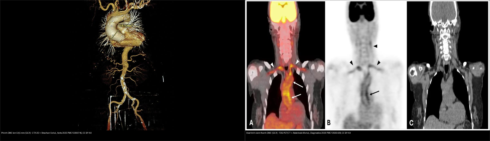
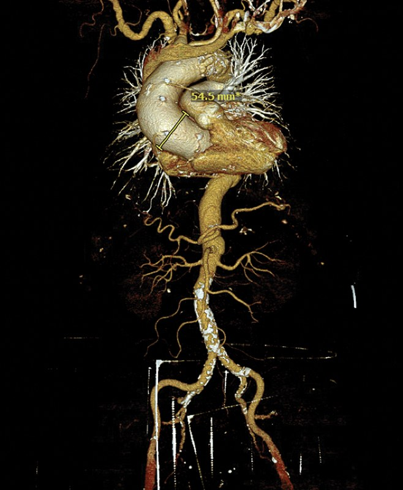
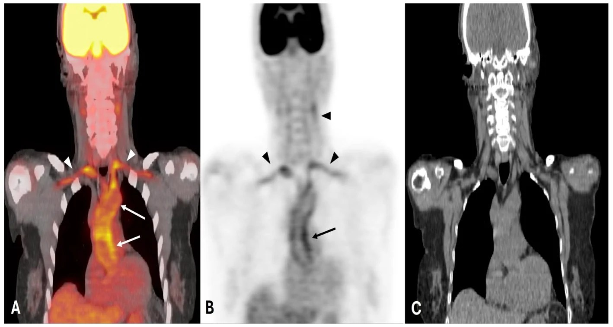
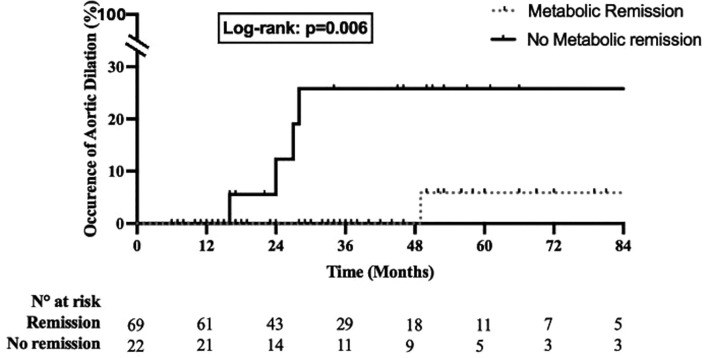
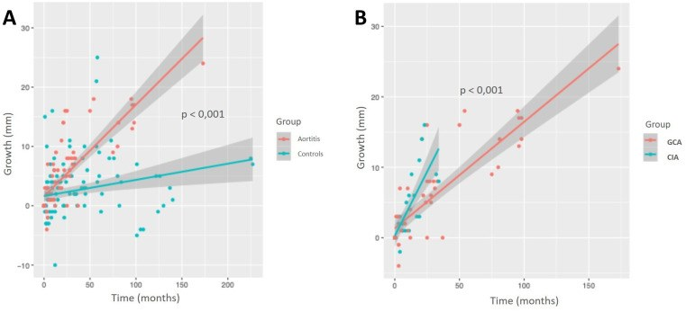
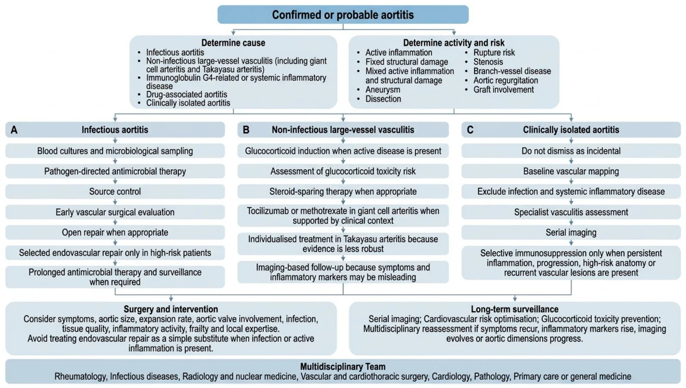
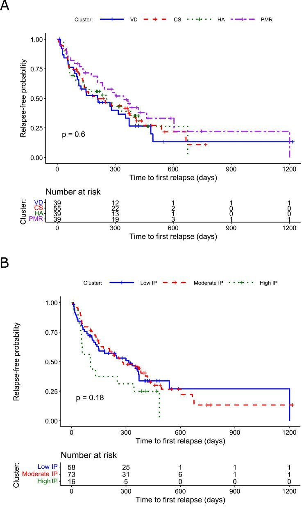

438 — Theo dõi dài hạn viêm ĐM tế bào khổng lồ & biến chứng mạch lớn: aortitis, phình/tách thành ĐMC, lịch CT/PET & tác dụng phụ corticoid / Long-term follow-up of giant cell arteritis & large-vessel complications
Tags: pattern:day-thanh-mach vung:thanh-mach-lon score:ACR-EULAR-2022 protocol:CTA-MRA protocol:FDG-PET-CT protocol:theo-doi-GCA
Mức chắc chắn (certainty): tổng hợp y văn (literature synthesis) — nhóm tự biên từ y văn mở (Aorta 2025 CC BY 4.0; Diagnostics 2026 CC BY 4.0; RMD Open 2026 CC BY-NC 4.0 ×3; J Pers Med 2026 CC BY 4.0; Ther Adv Musculoskelet Dis 2026 CC BY-NC 4.0; Front Med 2026 CC BY 4.0), chưa gắn một ca nguyên văn đơn lẻ xuyên suốt.
Vì sao bài này quan trọng: bài 435 (GCA & AAION) và 436 (Takayasu vs GCA) dừng ở chẩn đoán cấp. Nhưng GCA là bệnh mạn tính hệ thống: nguy cơ tử vong và tàn phế muộn đến từ biến chứng ĐMC (phình/tách thành) và độc tính corticoid tích lũy — cả hai chỉ lộ ra khi theo dõi dài hạn đúng cách. Đây là phần "sau khi đã chẩn đoán" quyết định tiên lượng (prognosis).
1. Tổng quan — GCA không chỉ là bệnh động mạch thái dương + tại sao viêm và tổn thương cấu trúc "tách rời" trên hình ảnh
- Viêm mạch lớn (large-vessel vasculitis, LVV) gặp ở khoảng một nửa số ca GCA nếu chủ động tầm soát bằng hình ảnh; nhiều ca không có triệu chứng sọ (cranial symptoms) — đây là lý do "GCA mạch lớn (LV-GCA)" dễ bị bỏ sót sau khi bệnh nhân hết đau đầu.
- Cơ chế hình ảnh (TẠI SAO): viêm u hạt bắt đầu từ lớp áo ngoài (adventitia) qua mạng vasa vasorum, lan vào lớp áo giữa (media) → phá hủy cơ trơn, đứt gãy sợi elastin & collagen → thành mạch yếu dần. Phá hủy lớp giữa tạo giãn/phình, thâm nhiễm + tăng sinh nội mạc tạo hẹp. Trên hình ảnh, điều này phân thành hai "ngăn" không song hành:
- Hoạt tính viêm (activity): giàu tế bào viêm tăng chuyển hóa glucose (GLUT-1) → ngấm ¹⁸F-FDG dọc thành mạch, và thành mạch nhạy gadolinium / sáng T2-STIR trên MRI. Đây là phần CÓ THỂ ĐẢO NGƯỢC và thay đổi theo điều trị.
- Tổn hại cấu trúc cố định (fixed structural damage): phình, tách thành, hẹp — không ngấm FDG sau khi viêm đã "cháy hết" nhưng vẫn tiếp tục tiến triển vì thành mạch đã mất chức năng đàn hồi. Đây là phần KHÔNG hồi phục và có thể lớn lên dù xét nghiệm viêm đã bình thường.
- Hệ quả thực hành: "hết viêm" không đồng nghĩa "hết nguy cơ". Xét nghiệm viêm (ESR/CRP) và triệu chứng có thể bình thường trong khi túi phình ĐMC vẫn âm thầm lớn → phải theo dõi hình ảnh cấu trúc định kỳ dù bệnh nhân thấy khỏe.
- Số liệu nằm lòng (dịch tễ & tốc độ giãn):
- Cohort dân số Olmsted (289 ca GCA, theo dõi tới 2020): tỉ lệ mắc biến chứng mạch lớn (large-artery involvement) tích lũy 15 năm = 14,8% (1950–1974) → 30,2% (1975–1999) → 49,2% (2000–2016), HR 3,48 (2000–2016 so với 1950–1974). So với người không GCA: HR 3,22 (95% CI 1,83–5,68); phình ĐMC ngực HR 13,46 (1,78–101,98) trong khi phình ĐMC bụng không tăng (HR 1,08, không ý nghĩa). Ẩn sâu: phân bố ngực ưu thế rõ rệt.
- Tốc độ giãn túi phình trước mổ (23 ca aortitis mô học — 13 GCA + 9 CIA — so 42 chứng thoái hóa): 0,177 ± 0,01 mm/tháng (≈ 2,12 mm/năm) so với 0,039 ± 0,02 mm/tháng (≈ 0,47 mm/năm) → giãn nhanh gấp 4,5 lần; thể aortitis đơn độc lâm sàng (CIA) giãn gấp đôi GCA.
- Tắt ngấm chuyển hóa (metabolic extinction) trên PET/CT dự báo nguy cơ phình: trong 91 ca LV-GCA điều trị tocilizumab, 76% đạt đáp ứng chuyển hóa hoàn toàn; phình ĐMC xảy ra 1% ở nhóm tắt ngấm hoàn toàn so với 18% ở nhóm không tắt ngấm (log-rank p = 0,006).
- Gánh nặng corticoid (glucocorticoid, GC) — "cái giá" của theo dõi dài hạn: phân tích 18.301 ca GCA ở Pháp (2010–2022) — dù liều cao giảm dần theo thời gian nhưng liều tích lũy 2 năm vẫn tới 7,6 g (ca chẩn đoán 2022). Mỗi gram GC cộng thêm: tử vong HR 1,024 (1,021–1,027); nhiễm trùng nặng 1,050 (1,038–1,062); biến cố tim mạch lớn (MACE) 1,015 (1,010–1,020); gãy xương loãng 1,013 (1,006–1,019). Ngay cả liều thấp ≤ 5 mg/ngày kéo dài năm vẫn làm tăng nhiễm trùng (HR 1,13) và MACE (HR 1,04) → mục tiêu là giảm liều tích lũy nhanh nhất có thể bằng thuốc tiết kiệm corticoid (steroid-sparing).
2. Mẫu hình + chẩn đoán phân biệt theo vị trí (gamut)
Hai câu hỏi lọc khi đọc hình ảnh một bệnh nhân GCA:
- Thành ĐMC DÀY/NGẤM — do viêm hay do xơ vữa/giả bắt bắt giữ? (phần "hoạt tính")
- Lòng mạch GIÃN/HẸP/TÁCH — cấu trúc đã hỏng chưa? (phần "tổn hại cấu trúc", cần can thiệp/mổ)
Gamut "thành ĐMC dày — lòng giãn/hẹp" ở người > 50 tuổi có GCA:
- Viêm mạch tự miễn: LV-GCA (ưu thế ĐMC ngực — cung, ĐMC lên, dưới đòn/nách/cảnh); aortitis đơn độc lâm sàng (CIA) — chỉ có aortitis, không đủ tiêu chuẩn GCA/TAK; viêm mạch Takayasu (xem bài 436 — người trẻ hơn, hẹp dài đoạn); aortitis IgG4 (kèm viêm tụy/thận mạn, giả u quanh thận).
- Nhiễm khuẩn (cấp cứu, trước khi tăng ức chế miễn dịch — PHẢI LOẠI TRỪ): aortitis nhiễm khuẩn (mycotic) — túi phình mọc nhanh, khí/thâm nhiễm quanh mạch, cấy máu (+); aortitis do giang mai — phình ĐMC lên cao, "double-ring"/canxi vòng; lao.
- Không viêm (bắt chước): xơ vữa động mạch — canxi hóa, mảng lệch tâm ở ngã ba, ngấm FDG nhẹ nhưng không giảm sau điều trị kháng viêm; aortitis do thuốc (ức chế điểm kiểm soát miễn dịch — nivolumab...); bệnh Erdheim–Chester (dày thành ĐMC + "thận lông").
- Hệ quả lên mắt: tổn thương cùng cơ chế viêm nội mạc/huyết khối gây CRAO (tắc ĐM mắt — bài 444), AAION/mù do thiếu máu đĩa thị (bài 435), hẹp ĐM cảnh gây bệnh mạch não.
3. Bảng so sánh phân biệt (ma trận đối chiếu)
| Thực thể (entity) | Hình ảnh điển hình (CTA/MRA + FDG-PET/CT) | Chốt vào (rule-in) | Chốt loại (rule-out) | Gợi ý xác nhận |
|---|---|---|---|---|
| LV-GCA / aortitis GCA | Dày thành ĐMC đồng tâm, ngấm đồng nhất dọc thành; ưu thế ĐMC ngực/cung/nhánh trên; PET ngấm FDG lan toàn thành; giai đoạn muộn → phình cách xa dưới động mạch dưới đòn | Tuổi ≥ 50 + tiền sử/đang GCA + dày thành ngấm trên PET/CT + ĐMC ngực (phình ngực HR 13,46) | Canxi hóa ngã ba + mảng lệch tâm không ngấm → xơ vữa | ACR/EULAR 2022 GCA ≥ 6 điểm; FDG-PET/CT; CTA/MRA theo dõi |
| Aortitis đơn độc lâm sàng (CIA) | Chỉ aortitis mô học/hình ảnh (thường gặp trên bệnh phẩm sau mổ ĐMC), không thỏa tiêu chuẩn GCA/TAK | Mô bệnh aortitis u hạt + rất ít/không đau đầu, ESR/CRP có thể bình thường + không bằng chứng ngoài ĐMC | Đủ ACR/EULAR 2022 GCA (≥ 6) hoặc TAK → gọi theo bệnh chính | Hội chẩn thấp khớp + mô bệnh; giãn nhanh gấp đôi GCA → theo dõi sát |
| Takayasu (TAK) | Hẹp/tắc dài đoạn, thành dày, nhiều nhánh; ưu thế cung ĐMC + dưới đòn/cảnh/thận; người trẻ | Người trẻ (≤ 40–60) + giảm mạch chi + chênh HA hai tay ≥ 20 mmHg + tổn thương nhiều nhánh | > 60 tuổi + triệu chứng sọ → GCA | ACR/EULAR 2022 TAK ≥ 5 điểm; Numano (bài 436) |
| Aortitis nhiễm khuẩn (mycotic) | Túi phình mọc nhanh, thành mỏng/thâm nhiễm quanh mạch, khí mô mềm, có thể tách thành | Sốt + đau lưng/bụng + phình mới + cấy máu (+) (Salmonella, E. coli...) | Thành dày xơ đều, không sốt, ngấm FDG giảm sau kháng viêm → viêm mạch | Cấy máu + MRI/CTA khẩn + mổ/dẫn lưu; KHÔNG tăng ức chế miễn dịch mù |
| Xơ vữa (atherosclerosis) | Canxi hóa trong thành, mảng lệch tâm ở ngã ba, thành mỏng–trung bình, ngấm FDG nhẹ | Canxi hóa + nguy cơ tim mạch + phân bố ngã ba ở người lớn tuổi | Ngấm FDG thành lan, thành dày tròn đồng tâm, giảm sau điều trị kháng viêm → viêm mạch | Đối chiếu yếu tố nguy cơ; PET trước–sau điều trị |

*Trái: phình ĐMC lên 54,5 mm trên dựng hình 3D ở ca GCA (Strachan S et al., Aorta 2025, PMC13300745, CC BY 4.0). Phải: hoạt tính viêm — thành ĐMC lên/cung ngấm FDG mạnh (A fused, B AC-PET, mũi tên) và nhánh trên vai hai bên (đầu mũi tên) (Abdelnabi M et al., Diagnostics 2026, PMC13565428, CC BY 4.0). Hai ngăn: cấu trúc (trái) vs hoạt tính (phải). Ảnh ghép letterbox.*Quiz composite: một bệnh nhân GCA có cả hai hình trên. Hình nào quyết định "còn viêm đang điều trị" và hình nào quyết định "cần mổ/phẫu thuật mạch"?
Bấm để hiện đáp án
- Phải (FDG-PET/CT) = hoạt tính viêm → định hướng điều trị kháng viêm (corticoid ± tocilizumab), theo dõi tắt ngấm.
- Trái (CTA 3D) = tổn hại cấu trúc → quyết định theo dõi kích thước/mổ: đo đường kính tối đa mỗi lần; ≥ 50–55 mm hoặc giãn nhanh là chỉ định tham khảo chuyên khoa mạch máu/tim (con số tuyệt đối theo hướng dẫn phẫu thuật, cần đối chiếu ACC/AHA 2022).
- Chốt: không suy "hết viêm = hết bệnh"; phình có thể lớn dù ESR/CRP bình thường.
4. Protocol theo dõi + thang điểm + xử trí
Hình ảnh nền tảng — "chụp cái gì để theo dõi cái gì":
- FDG-PET/CT = theo dõi HOẠT TÍNH. Nhịn đói ≥ 6 giờ, đường huyết < 7 mmol/L; đọc ngấm thành mạch so với gan theo thang thị giác 0–3 (grade 0–1 coi như "tắt ngấm"). PET giảm ngấm khi kiểm soát viêm nên dùng để đánh giá đáp ứng & tắt ngấm, không để phát hiện hẹp/phình xơ cố định (có thể âm FDG).
- CTA/MRA = theo dõi CẤU TRÚC. Đo đường kính ĐMC tối đa ở cùng mốc giải phẫu mỗi lần (khó nhất là so sánh khi lần đầu chỉ làm PET/CT liều thấp) + ghi tốc độ giãn (mm/năm); MRI T2-STIR thành sáng + ngấm gadolinium để đánh giá phù viêm.
- Lịch theo dõi (khung thực hành): chụp ĐMC + các nhánh lúc chẩn đoán (nền tảng so sánh), lặp 3–6 tháng khi bệnh hoạt động/nghi biến chứng, rồi mỗi 6–12 tháng → hàng năm khi ổn định; theo dõi tiếp tục kể cả khi triệu chứng & ESR/CRP đã bình thường (surveillance "song song", không dừng theo triệu chứng).
- Siêu âm tim: tìm hở van ĐMC (aortic regurgitation) do giãn gốc ĐMC/van — một biến chứng cơ học cần đánh giá riêng (đau ngực/khó thở mới ở người GCA cũ).
- Xét nghiệm & độc tính: ESR/CRP không loại trừ hoạt động; theo dõi glucose, huyết áp, mật độ xương (DEXA), mắt (glaucoma/đục thủy tinh thể), calci/vitamin D vì độc tính corticoid tích lũy.
Thang điểm & phân tầng:
- ACR/EULAR 2022 — GCA (phân loại, bắt buộc tuổi ≥ 50): ≥ 6 điểm gồm mất thị lực đột ngột +3; ESR ≥ 50 mm/h hoặc CRP ≥ 10 mg/L +3; sinh thiết (+) hoặc dấu quầng +5; cứng khớp vai/cổ +2; đau hàm/lưỡi +2; đau đầu thái dương mới +2; đau da đầu +2; khám ĐM thái dương bất thường +2; tổn thương ĐM nách hai bên +2; FDG-PET ngấm lan ĐMC +2 (dùng lại ở theo dõi như một "khung" ghi bằng chứng mạch lớn).
- Ngưỡng cảnh báo cấu trúc (kinh điển, mốc tham khảo): ĐMC lên ≥ 50–55 mm (nguy cơ tách thành tăng vọt) hoặc tốc độ giãn nhanh → chuyển phẫu thuật tim–mạch; gốc ĐMC giãn gây hở van → cân nhắc thay toàn bộ ĐMC lên khi mổ. (Số tuyệt đối theo ACC/AHA cần đối chiếu bản gốc — chưa trích trực tiếp trong các bài nguồn này.)
flowchart TD
A[Chan doan GCA - da dieu tri: corticoid +/- tocilizumab] --> B["Chup NEN tang: CTA/MRA DMC + nhanh (do duong kinh) + FDG-PET dang hoat tinh"]
B --> C{Con hoat tinh viem?}
C -->|Dang hoat dong / ngh bien chung| D[PET/CT lai 3-6 thang + lui lieu theo EULAR]
C -->|On dinh| E[CTA/MRA lai 6-12 thang -> hang nam khi on dinh]
D --> F{PET tat ngam hoan toan?}
F -->|Co| G[Nguy co phinh DMC THAP 1%: tiep tuc theo doi cau truc]
F -->|Khong| H[Nguy co phinh DMC CAO 18%: theo doi sat + toi uu thuoc tiet kiem corticoid]
G --> I{Duong kinh DMC tang?}
H --> I
I -->|>= 50-55 mm hoac gian nhanh| J[Chuyen phau thuat mach mau/tim - khong cho het viem]
I -->|On dinh| K[Giam dan corticoid + theo doi doc tinh DEXA/mat/HA/duong huyet]
K --> L[Khong ngung theo doi chi vi trieu chung/ESR-CRP da binh thuong]
Xử trí nền tảng:
- Corticoid là nền tảng; tocilizumab (ức chế thụ thể IL-6) là thuốc tiết kiệm corticoid hàng đầu: tỉ lệ lui bệnh OR 4,30 (so với chứng), gộp các thuốc sinh học OR 2,58; ức chế TNF-α làm tăng nhiễm trùng (OR 2,41) — không ưu tiên.
- Mục tiêu: giảm liều tích lũy corticoid (mỗi gram đều có giá) nhưng không ngừng theo dõi mạch lớn. Không tăng ức chế miễn dịch trước khi loại trừ aortitis nhiễm khuẩn.
- Aortitis đơn độc (CIA) sau mổ ĐMC: không mặc định điều trị ức chế miễn dịch cho mọi ca — cân nhắc chỉ khi còn viêm dai dẳng/tiến triển/giải phẫu nguy cơ cao; nhưng không được xem là "phát hiện mổ không quan trọng" — phải hội chẩn và theo dõi.
5. Biến thể bình thường và cạm bẫy
- Xơ vữa "giả aortitis" trên PET: người lớn tuổi ngấm FDG nhẹ ở mảng xơ vữa → dễ gọi nhầm viêm. Phân biệt: lệch tâm, có canxi, ở ngã ba, không giảm sau điều trị kháng viêm (khác viêm mạch = ngấm lan thành, đồng tâm, giảm sau điều trị).
- PET âm không loại trừ ("burnt-out"): tổn hại cấu trúc cố định (phình/hẹp) có thể âm FDG dù vẫn tiến triển → vẫn phải CTA/MRA định kỳ.
- ESR/CRP bình thường không loại trừ tái phát/biến chứng: nhiều ca LV-GCA không có dấu hiệu viêm rõ — đừng ngừng theo dõi hình ảnh vì xét nghiệm đẹp.
- Aortitis nhiễm khuẩn bị bỏ sót: tăng corticoid/ức chế miễn dịch "mù" cho một túi phình nhiễm khuẩn = thảm họa (vỡ mạch). Luôn hỏi: sốt? cấy máu? phình mọc nhanh?
- Aortitis do thuốc ức chế điểm kiểm soát miễn dịch (nivolumab...): hình ảnh giống viêm mạch nguyên phát → hỏi kỹ thuốc đang dùng trước khi chốt GCA.
- Đau đầu mới sau khi hết giai đoạn đầu: đừng chỉ nghĩ tái phát GCA — hở van ĐMC do giãn gốc ĐMC, tách thành, hẹp mạch cũng có thể là nguyên nhân → cần chụp mạch/thành mạch, không tăng corticoid mù.
- Cạm bẫy "đọc CTA một mình": CTA đo cấu trúc tốt nhưng không nói hoạt tính; ngược lại PET nói hoạt tính nhưng không đo lòng mạch → bắt buộc tiếp cận đa phương thức (CTA/MRA + PET/CT) và ghi rõ mốc đo.
6. Tự lượng giá — Blind Quiz
Ca 1 — Nam 71 tuổi, GCA 4 năm, hiện hết triệu chứng sọ, ESR/CRP bình thường. CTA kiểm tra định kỳ:

- Hỏi: mô tả tổn thương? Nhìn gì để ra quyết định? Vì sao xét nghiệm bình thường mà vẫn lo?
Bấm để hiện đáp án (findings + chẩn đoán)
- Dấu hiệu (findings): phình ĐMC lên đường kính 54,5 mm trên dựng hình 3D; thành mạch dày.
- Chẩn đoán (diagnosis): phình ĐMC ngực liên quan GCA (aortitis → phá hủy lớp giữa). Điểm mấu chốt: nguy cơ phình ĐMC ngực tăng mạnh ở GCA (HR 13,46); phình do aortitis giãn gấp 4,5 lần chứng thoái hóa.
- Cần làm: đo lại đúng mốc giải phẫu để tính tốc độ giãn; ≥ 50–55 mm hoặc giãn nhanh → hội chẩn phẫu thuật mạch máu/tim (không chờ "hết viêm"); đánh giá hở van ĐMC.
- Cạm bẫy: ESR/CRP bình thường không loại trừ tổn hại cấu trúc đang tiến triển.
- Nguồn ảnh: Strachan S et al., Aorta 2025 (PMC13300745) Fig. 2, CC BY 4.0.
Ca 2 — Nữ 68 tuổi, GCA thể mạch lớn, đang bước vào điều trị ức chế miễn dịch. FDG-PET/CT:

- Hỏi: thành phần nào "ngấm"? Đây là hoạt tính hay tổn hại cấu trúc? Trước khi lên thang ức chế miễn dịch phải loại trừ gì?
Bấm để hiện đáp án (findings + chẩn đoán)
- Dấu hiệu (findings): thành ĐMC lên/cung ngấm FDG mạnh (A fused; B AC-PET — mũi tên), kèm ngấm nhánh trên vai hai bên (đầu mũi tên). Đây là hoạt tính viêm (tế bào viêm tăng GLUT-1).
- Chẩn đoán (diagnosis): GCA mạch lớn (LV-GCA) đang hoạt động.
- Trước khi tăng ức chế miễn dịch: loại trừ aortitis nhiễm khuẩn (cấy máu, lâm sàng sốt, hình túi phình/thâm nhiễm quanh mạch) — không được tăng corticoid "mù".
- Theo dõi: lặp PET/CT tìm tắt ngấm — nhóm tắt ngấm có nguy cơ phình ĐMC 1% so với 18%.
- Nguồn ảnh: Abdelnabi M et al., Diagnostics 2026 (PMC13565428) Fig. 8, CC BY 4.0.
Ca 3 — Cùng bệnh nhân, so sánh hai lần PET/CT và nguy cơ phình ĐMC:

- Hỏi: hai đường cong nói gì? "Tắt ngấm chuyển hóa" có ý nghĩa tiên lượng nào?
Bấm để hiện đáp án (findings + chẩn đoán)
- Dấu hiệu (findings): đường cong tỉ lệ mắc phình ĐMC tích lũy cao hơn rõ ở nhóm không tắt ngấm hoàn toàn so với nhóm tắt ngấm (log-rank p = 0,006).
- Ý nghĩa: tắt ngấm chuyển hóa hoàn toàn (grade 0–1 so với gan) trên PET/CT lặp lại sau tocilizumab giảm nguy cơ phình ĐMC (1% vs 18%) → PET là công cụ theo dõi đáp ứng, không chỉ chẩn đoán.
- Nguồn ảnh: Dumont A et al., RMD Open 2026 (PMC13034310) Fig. 2, CC BY-NC 4.0.
Ca 4 — Hai túi phình ĐMC ngực được mổ: một có aortitis, một thoái hóa. So đồ thị tốc độ giãn:

- Hỏi: nhóm nào giãn nhanh hơn và nhanh bao nhiêu lần? Thể aortitis nào giãn nhanh nhất?
Bấm để hiện đáp án (findings + chẩn đoán)
- Dấu hiệu (findings): nhóm aortitis (đỏ) có độ dốc lớn hơn rõ (p < 0,001) so với chứng thoái hóa (xanh); trong aortitis, CIA dốc hơn GCA (B).
- Số liệu: 0,177 mm/tháng (2,12 mm/năm) so 0,039 mm/tháng (0,47 mm/năm) = 4,5 lần; CIA = 2× GCA.
- Ý nghĩa: aortitis viêm cần khoảng theo dõi ngắn hơn (phát hiện sớm tốc độ giãn bất thường).
- Nguồn ảnh: Benichou A et al., RMD Open 2026 (PMC13264951) Fig. 1, CC BY-NC 4.0.
Ca 5 — Bệnh nhân mới chẩn đoán "aortitis xác định/khả năng", cần một quy trình:

- Hỏi: lưu đồ chia aortitis thành mấy nhóm nguyên nhân? Vì sao "theo dõi dài hạn" tách khỏi "điều trị"?
Bấm để hiện đáp án (findings + chẩn đoán)
- Dấu hiệu/khung: chia nhiễm khuẩn (A) · viêm mạch lớn không nhiễm khuẩn (B) · aortitis đơn độc lâm sàng (C); sau đó phẫu thuật/can thiệp + theo dõi dài hạn (chụp cấu trúc định kỳ, phòng độc tính corticoid, hội chẩn đa chuyên khoa).
- Nguyên tắc: phân loại theo NGUYÊN NHÂN trước (nhiễm khuẩn vs miễn dịch) mới quyết định điều trị; theo dõi tiếp tục kể cả sau khi triệu chứng/xét nghiệm cải thiện.
- Nguồn ảnh: Georghiou GP et al., J Pers Med 2026 (PMC13514586) Fig. 4, CC BY 4.0.
Ca 6 — Theo dõi nguy cơ tái phát khi giảm/ngừng corticoid:

- Hỏi: đồ thị nói gì về khả năng còn lui bệnh không corticoid theo thời gian? Các "cụm" triệu chứng có khác nhau không?
Bấm để hiện đáp án (findings + chẩn đoán)
- Dấu hiệu (findings): xác suất không tái phát giảm dần theo thời gian (nhiều ca tái phát trong ~1–2 năm đầu); phân nhóm theo triệu chứng (A: rối loạn thị giác/đau đầu/PMR...) không khác biệt ý nghĩa (p = 0,6), phân nhóm theo xét nghiệm viêm cũng không khác nhiều (p = 0,18).
- Ý nghĩa: giảm corticoid cần theo dõi tái phát sát, không dựa vào "kiểu triệu chứng" để dự đoán; hỗ trợ thuốc tiết kiệm corticoid để giảm liều tích lũy.
- Nguồn ảnh: Gorlen TF et al., Ther Adv Musculoskelet Dis 2026 (PMC13487055) Fig. 3, CC BY-NC 4.0.
Bài liên quan chéo
- 400 – Tổng quan Mắt & thị giác
- 435 – GCA & AAION vs NAION (chẩn đoán cấp, halo sign, TAB, corticoid liều cao)
- 436 – Takayasu vs GCA (viêm mạch lớn) (phân biệt tuổi + hình ảnh thành mạch, Numano, ACR/EULAR 2022)
- 444 – Tắc mạch võng mạc (CRAO — biến chứng mạch cấp)
- 451 – Biểu hiện mắt của bệnh hệ thống
Ảnh
438_phinh-dmc-len_CTA_PMC13300745-Fig2-CCBY.jpg— Strachan S et al., Aorta 2025 (PMCID: PMC13300745) Fig. 2, CC BY 4.0.438_gca-fdg-pet-dmc_PETCT_PMC13565428-Fig8-CCBY.jpg— Abdelnabi M et al., Diagnostics 2026 (PMCID: PMC13565428) Fig. 8, CC BY 4.0.438_pet-tat-ngam_PETCT_PMC13034310-Fig1-CCBYNC.jpg— Dumont A et al., RMD Open 2026 (PMCID: PMC13034310) Fig. 1, CC BY-NC 4.0.438_phinh-dmc-theo-pet-PMC13034310-Fig2-CCBYNC.jpg— Dumont A et al. (PMC13034310) Fig. 2, CC BY-NC 4.0.438_toc-do-phinh-aortitis_PMC13264951-Fig1-CCBYNC.jpg— Benichou A et al., RMD Open 2026 (PMCID: PMC13264951) Fig. 1, CC BY-NC 4.0.438_lo-trinh-theo-doi_PMC13514586-Fig4-CCBY.jpg— Georghiou GP et al., J Pers Med 2026 (PMCID: PMC13514586) Fig. 4, CC BY 4.0.438_tai-phat-KM_PMC13487055-Fig3-CCBYNC.jpg— Gorlen TF et al., Ther Adv Musculoskelet Dis 2026 (PMCID: PMC13487055) Fig. 3, CC BY-NC 4.0.composite_phinh-dmc-vs-hoat-tinh-viem.jpg— ghép Fig. 2 (PMC13300745) + Fig. 8 (PMC13565428) bằngtools/make_composite.py.- Chi tiết giấy phép từng ảnh trong
images/CREDITS.md. AuntMinnie: chỉ dẫn link, không tải.
Không dùng để chẩn đoán độc lập khi chưa có người hướng dẫn.